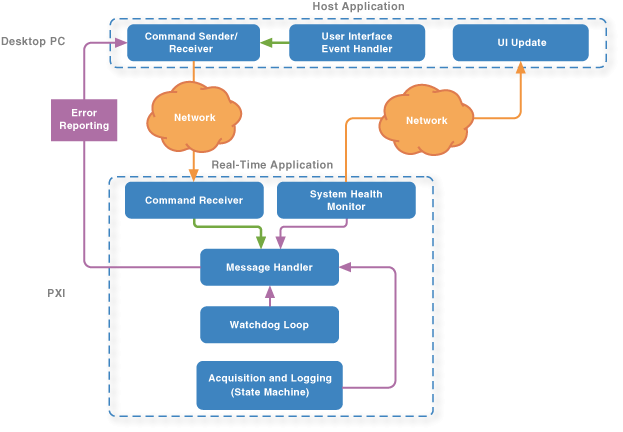

LabVIEW Real-Time Waveform Acquisition and Logging (NI-DAQmx)
The LabVIEW Real-Time Waveform Acquisition and Logging (NI-DAQmx) sample project uses NI-DAQmx code to acquire continuous waveform data. This sample project also uses LabVIEW Real-Time Module code to log this data to disk.
Features
- Headless operation with optional user interface—The user interface VI interacts with the real-time controller and displays data. This VI can connect and disconnect from the device at any time without affecting the acquisition and logging loop.
- Triggered data logging—The real-time VI logs acquired data to disk as TDMS files when a trigger condition is met. This sample project also manages the amount of disk space being used.
- Error handling—The application reports and logs all errors from the real-time controller, shutting down on any critical error.
System Requirements
Development System
- LabVIEW Full or Professional Development System
- LabVIEW Real-Time Module
- NI-DAQmx device driver software
Real-Time Target, such as an NI PXI Chassis or an NI CompactDAQ System
- Software:
- LabVIEW Real-Time
- Network Streams
- Network Variable Engine
- NI System Configuration
- NI-DAQmx
- NI-Watchdog
- Hardware: A DAQ device. This sample project is designed for an NI PXI DAQ device with at least four analog input channels.
Overview

This sample project consists of eight parallel loops on two execution targets. The following loops run in parallel on the desktop computer:
- Handling events from the user interface (UI Main.vi - Event Handling Loop)—Produces messages to the UI Message Loop based on front panel events.
- Handling messages from the user interface and the real-time controller (UI Main.vi - UI Message Loop)—Receives and responds to messages from the Event Handling Loop and, using network streams, the RT Message Handling Loop.
- Displaying messages and data from the real-time controller (UI Main.vi - Monitoring Loop)—Displays the latest values of information acquired from RT Loop - System Health and Monitoring.vi.
The following loops run in parallel on the real-time controller:
- Handling commands from the user interface (RT Loop - UI Commands.vi)—Reads commands that are sent from UI Main.vi on the development computer and produces the appropriate messages.
- Handling messages from all loops on the real-time controller (RT Main.vi - Message Handling Loop)—Consumes messages from all loops that run on the real-time controller.
- Ensuring the RT controller remains responsive (RT Loop - Watchdog.vi)—Pets the watchdog, ensuring the RT controller remains responsive.
- Monitoring diagnostic information from the real-time controller (RT Loop - System Health and Monitoring.vi)—Monitors CPU and memory usage of the real-time controller. This information is written to network-published shared variables and appears on the System Monitoring tab of UI Main.vi.
- Acquiring and logging data from the DAQ device (RT Loop - Acquisition and Logging.vi)—Initializes the DAQ device, reads data from it, and logs acquired data.
Running This Sample Project
- Adapt the sample project to your hardware.
- In the Project Explorer window, open My Computer»Utility - Configuration File Generator.vi.
- Enter the configuration values that are appropriate for your application. Be sure to look at all the values in the TDMS Properties array. If you enable a trigger, logging begins when the specified time or value is reached.
- Run the VI. LabVIEW generates a configuration file, Config.xml, in the same directory as the .lvproj file.
- Transfer this XML file to the root folder of the real-time controller.
- Navigate to the IP address of your target device in a web browser.
- Click Remote File Browser.
- Select the root directory in the file tree.
- Click Upload File... and select the Config.xml file generated.
- Run RT PXI Target»RT Main.vi. This VI begins acquiring data and logging it using the configuration settings in Config.xml.
- Open and run My Computer»UI Main.vi.
- Enter the IP address of the real-time controller in the Controller Address text box and click Connect.
- After connecting to the device, start the acquisition process by clicking Force Trigger and display live data in the waveform chart by clicking Acquire Live Data. Change the Live Data Channel control to see live data from different channels.
- Click Exit to exit the application.
Adapting the Sample Project to Your Hardware
- Ensure all devices are configured and connected to the same network as the development computer.
- In the Project Explorer window, add or discover your RT target to the to the top-level project item.
- Drag the following project items from the default RT target to the one you added in step 2:
- Error Handlers folder
- Globals folder
- RT Loops folder
- Support VIs folder
- Type Definitions folder
- Shared Variables.lvlib
- RT Main.vi
- Delete the default RT target project item that no longer has any VIs associated with it.
- Customize the code in the following places to communicate with your DAQ device:
- DAQ Close.vi
- DAQ Initialize.vi
- DAQ Read.vi
Configuring Sample Project Settings
In the Project Explorer window, open My Computer»Globals»Global - Configuration Options.vi and configure the sample project settings.
Modifying This Sample Project
If the default logging behavior is too slow for your application, you can use the DAQmx Start New File and DAQmx Configure Logging VIs. Refer to the VI documentation for more information.
Additional Resources
Refer to the LabVIEW Help, available by selecting Help»LabVIEW Help for information about LabVIEW concepts or objects used in this sample project. You can also use the Context Help window to learn basic information about LabVIEW objects as you move the cursor over each object. To display the Context Help window in LabVIEW, select Help»Show Context Help
Refer to ni.com for a developer walkthrough of the LabVIEW Real-Time sample projects.
This sample project is based on the Simple State Machine and Queued Message Handler templates. Refer to the Simple State Machine and Queued Message Handler templates and their documentation, available from the Create Project dialog box, for information about how these templates work.
Important Information
Copyright
© 2013 National Instruments. All rights reserved.
Under the copyright laws, this publication may not be reproduced or transmitted in any form, electronic or mechanical, including photocopying, recording, storing in an information retrieval system, or translating, in whole or in part, without the prior written consent of National Instruments Corporation.
National Instruments respects the intellectual property of others, and we ask our users to do the same. NI software is protected by copyright and other intellectual property laws. Where NI software may be used to reproduce software or other materials belonging to others, you may use NI software only to reproduce materials that you may reproduce in accordance with the terms of any applicable license or other legal restriction.
End-User License Agreements and Third-Party Legal Notices
You can find end-user license agreements (EULAs) and third-party legal notices in the following locations:
- Notices are located in the <National Instruments>\_Legal Information and <National Instruments> directories.
- EULAs are located in the <National Instruments>\Shared\MDF\Legal\license directory.
- Review <National Instruments>\_Legal Information.txt for information on including legal information in installers built with NI products.
Trademarks
LabVIEW, National Instruments, NI, ni.com, NI CompactDAQ, the National Instruments corporate logo, and the Eagle logo are trademarks of National Instruments Corporation. Refer to the Trademark Information at ni.com/trademarks for other National Instruments trademarks.
Other product and company names mentioned herein are trademarks or trade names of their respective companies.
Patents
For patents covering the National Instruments products/technology, refer to the appropriate location: Help»Patents in your software, the patents.txt file on your media, or the National Instruments Patent Notice at ni.com/patents.